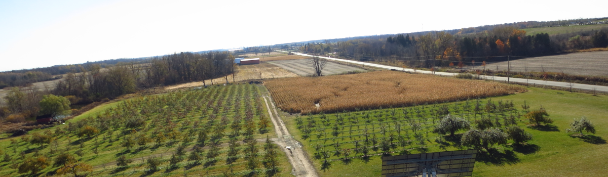
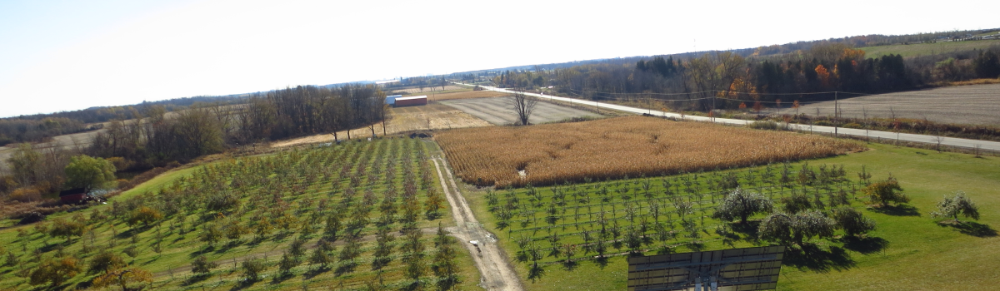

In 2014 Lumpy Potato was contracted by NASA to do an initial geological reconnaisance of Io, ahead of an upcoming classified colonization mission. To accurately capture this data, we stuffed our remote sensing expert, Zachary Masson, into a cramped spacecraft alongside cutting edge remote sensing equipment. He is scheduled to return to Earth orbit in early 2025, but the images he has transmitted back have been crucial in NASA's planning.
Ongoing Results
Scientifically groundbreaking geological data
Paving the way for scientific study on Io
Significant data recovered on effects of longterm space flight on the human body
Agricultural DEM Analysis - OMAFRA
Starting in Early 2020, Ontario's Ministry of Agriculture, Food and Rural Affairs (OMAFRA) requested Lumpy Potato's assistance in the creation of new, detailed DEMs for waterflow analysis purposes. These DEMs are being used to build an ongoing model of waterflow to help farmers predict crop yield and avoid losses due to excessive rainfall and flooding.
Ongoing Results
Summer fruit yield in 2021 showed a 240% increase on 2020 production
Reduction in crop damage estimated to save farmers an average of 1000 labour hours each year
Project received special commendation by the United Nations, and is now being implemented at a global scale
Digitization of Historical Maps - Government of Iceland
In late 2021, the Government of Iceland reached out to Lumpy Potato for assistance in the digitization and georeferencing of maps of historical and cultural importance. Lumpy Potato is working with the Icelandic Ministry of Education, Science and Culture to scan and georeference over 500 maps, dating as far back as 1200CE.
Ongoing Results
Over 300 maps digitized, digitally touched-up, and made available for the public
Web service allowing public viewing of digitized maps designed and implemented
Secret trove of Viking treasure discovered
Past Projects
Houston Hurricane Risk
The city of Houston contracted Lumpy Potato to analyze areas of highest risk for hurricane. We created an analysis based on vehicle possession and distance to hurricane evactuation routes, now available to the public.
World Tree Observation Database
In 2016, in collaboration with the United Nations, Lumpy Potato worked to create a global database management system with the end goal of tracking the species and location of every tree on the planet. The database is complete, but data collection is ongoing.
Archaelogical Cave Diving
Working with the government of Cuba, Lumpy Potato produced unprecedented maps of neolithic archaeologocical sites in submerged cave systems along Cuba's North coast. This monumental achievement was accomplished through develoment revoluationary new software for calculating cave depth.


 
